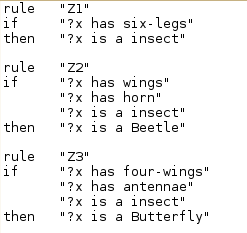
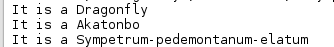
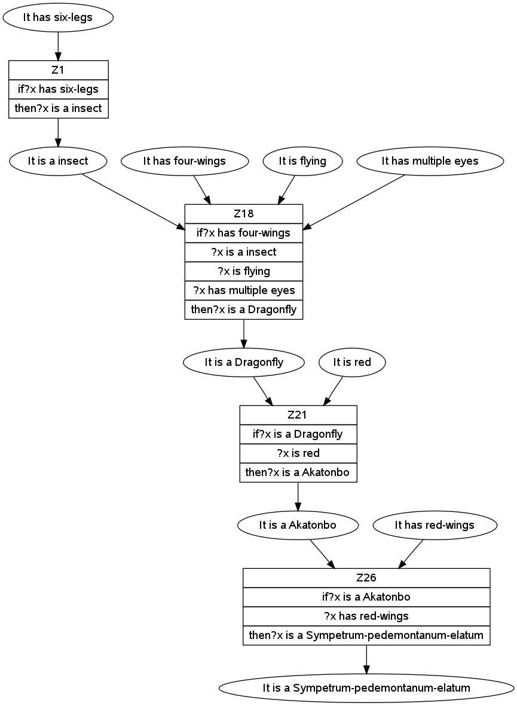
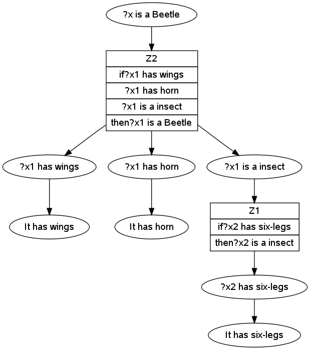

グループ
グループ作成書類: GrepX
メンバーと役割分担:
- 名工大輔 26115000: 課題X-1 考察担当，課題X-4 GUI実装担当
- 名工太郎 24115999: 課題X-1 実装担当，課題X-2 考察担当，グループ作成書類担当
ソースファイル
担当したところについて示す。
課題6-2
CarShop.data , AnimalWorld.data 等のデータファイルを実際的な応用事例に書き換えて，前向き推論，および後ろ向き推論に基づく質問応答システムを作成せよ．
どのような応用事例を扱うかは，メンバーで話し合って決めること．
なお，ユーザの質問は英語や日本語のような自然言語が望ましいが，難しければ変数を含むパターン等でも可とする．
独自仕様の説明
ForwardChainを担当した。
今回のデータファイルは虫としたので虫の特徴を「It is ○○」の形式でいれてもらい「What is this?」と質問してもらうと該当する虫の名前を返すものである。
第1引数はアサーションのファイル名を入力する。
第2引数はルールのファイル名を入力する。
第3引数は質問を入力する。
第4引数は推論後のワーキングメモリを保存するファイル名を入力する。
プログラムの構造
RuleBaseSystemクラスではquestionメソッドが定義されている。
questionメソッドでは引数でアサーションのファイル名、ルールのファイル名、質問内容、前向き推論後のワーキングメモリを保存するファイル名をとり答えをリスト型で返す。
WorkingMemoryクラスではmatchinAssertionsメソッド、matchableメソッド、addAssertionメソッド、containsメソッド、toStringメソッドが定義されている。
matchingAssertionsメソッドでは新しくArrayListを作成してmatchableメソッドを実行する。
matchableメソッドでは引数にArrayList2つとint型の変数をとりマッチするアサーションに対するバインディング情報を再帰的にもとめて返す。
addAssertionメソッドでは引数にString型をとり、アサーションをワーキングメモリに加えている。
containsメソッドでは引数にString型をとり、アサーションがすでに含まれていればtrue、含まれていなければfalseを返す。
toStringメソッドではワーキングメモリの情報を返す。
RuleBaseクラスではforwardChainメソッド、instantiateメソッド、varメソッド、loadRulesメソッドが定義されている。
コンストラクタの引数があるほうでは引数のファイルからルールを読み込んでいる。
forwardChainメソッドでは前向き推論を行っている。
instantiateメソッドでは与えられた文字列を変数束縛み従って具体化している。
varメソッドでは引数の先頭の文字が?ならtrueを返す。
loadRulesメソッドでは引数のファイルからルールを読み出している。
RuleクラスではgetNameメソッド、toStringメソッド、getAntecedentsメソッド、getConsequentメソッドが定義されている。
getNameメソッドではルールの名前を返す。
toStringではルールをString形式で返す。
getAntecedentsメソッドではルールの前件を返す。
getConsequentメソッドではルールの後件を返す。
Matcheクラスではmatchingメソッドが2つ、tokenMatchingメソッド、varMatchingメソッド、varメソッドが定義されている。
matchingメソッドの引数が3つのとき、ハッシュマップを継続させてmatchingを行っている。2つのときはマッチングできるか調べている。
tokenMatchingメソッドではトークンが等しければtrue、トークンのどちらかが変数ならvarMatchingを行っている。
varMatchingメソッドではハッシュマップに変数の値があってそれがトークンと等しければtrue、等しくなければfalse、変数の値がなければハッシュマップの更新を行っている。
varメソッドではトークンが?で始まればtrueを返す。
Unifyクラスではmatchメソッドが定義されている。
matchメソッドでは再帰を用いてファイルの中身とパターンをマッチングして変数束縛を求めている。
Unifierクラスではunifyメソッド、tokenMatchingメソッド、varMatchingメソッド、replaceBufferメソッド、replaceBindingsメソッド、varメソッドが定義されている。
unifyメソッドは2種類ある。
引数を３つとるものはハッシュマップを継続してunifyを呼び出している。
引数を2つとるものは2つの引数がマッチングできればtrueを、できなければfalseを返す。
tokenMatchingメソッドは引数のtokenに応じてtrueかfalseを返す。
varMatchingメソッドはマッチングの処理を行っている。
replaceBufferメソッドはbufferの中身を書き換えている。
replaceBindingsメソッドはハッシュマップに値をいれている。
varメソッドは?から始まっていたらtrueそうでなければfalseを返す。
実装の説明
RuleBaseSystemクラスのquestionメソッドでは
Pattern pat = Pattern.compile("What is this?");
java.util.regex.Matcher mat = pat.matcher(que);
if(mat.find()){
pattern[1] ="It is a ?x";
}
else{
ArrayList<String> list= new ArrayList<String>();
list.add("differnt question type");
return list;
}
ここでは正規表現を用いて質問形式があっているか調べている。
質問形式があっていれば変数をつかった質問をパターンに保存する。
あっていなければそのことをリストに格納して返す。
try { // ファイル読み込みに失敗した時の例外処理のためのtry-catch構文
// 文字コードを指定してBufferedReaderオブジェクトを作る
BufferedReader in = new BufferedReader(new InputStreamReader(
new FileInputStream(fileName), "UTF-8"));
// 変数lineに1行ずつ読み込むfor文
for (String line = in.readLine(); line != null; line = in
.readLine()) {
rb.wm.addAssertion(line);// アサーションの追加
}
} catch (IOException e) {
e.printStackTrace(); // 例外が発生した所までのスタックトレースを表示
}
rb.forwardChain();
ここではファイルから1行ずつよみこんでアサーションを追加している。
追加し終わったら前向き推論を行っている。
try {
File file = new File(memo);
file.createNewFile();
if (checkBeforeWritefile(file)) {
PrintWriter pw = new PrintWriter(new BufferedWriter(
new FileWriter(file)));
for (String line : rb.wm.assertions) {
pw.println(line);// 前向き推論で得られたアサーションをファイルに書き込む
}
pw.close();
ここでは前向き推論によって最終的に得られたワーキングメモリを1つずつファイルに書き込んでいる。
Unify.match(memo, pattern, 1,new HashMap<String, String>(), pattern.length);
ここでワーキングメモリと質問文のマッチングを行っている。
マッチングが成功したかどうかはUnifyのansListのサイズでわかるのでif文でわけている。
マッチングが成功した、つまりansListのサイズが0ではないとき
String[] one = Unify.ansList.toString().split("");
boolean front =false;
String ans1="";
ArrayList<String> answer=new ArrayList<String>();
for(String l:one){
if(l.equals(")")){
answer.add(ans1);
front =false;
ans1="";
}
if(front){
ans1+=l;
}
if(l.equals("(")){
front =true;
}
}
まずansListをsplitを用いて1文字ずつの配列に分解する。
for文の中では()の中身を取り出してArrayListに保存している。
if(answer.size()==0){
}
else{
for(String list:answer){
if( Character.isUpperCase( list.charAt( 0 ) ) ) {//大文字なら
ans.add("It is a "+list);
}
}
}
答えが見つからなければスルーして、もし見つかれば順に取り出して大文字から始まったら答えであるので答えであるということをArrayListに追加する。
WorkingMemoryクラスのmatchableメソッドは課題6-3のほうで説明する。
RuleBaseクラスのforwardChainメソッドも課題6-3のほうで説明する。
instantiateメソッドでは
StringTokenizer st = new StringTokenizer(thePattern);
for (int i = 0; i < st.countTokens();) {
String tmp = st.nextToken();
if (var(tmp)) {
result = result + " " + (String) theBindings.get(tmp);
} else {
result = result + " " + tmp;
}
}
まずトークンごとにパターンを分解する。
もしそのトークンが変数であるならばハッシュマップに記録されている値に変更する。
loadRulesではStramTokenizerをもちいてトークンごとにわける。
if ("rule".equals(st.sval)) {
st.nextToken();
// if(st.nextToken() =='"'){
name = st.sval;
st.nextToken();
トークンがもしruleと等しかった場合トークンを次のものにしてそのトークンをnameに格納している。
if ("if".equals(st.sval)) {
antecedents = new ArrayList<String>();
st.nextToken();
while (!"then".equals(st.sval)) {
antecedents.add(st.sval);
st.nextToken();
}
トークンがifであった場合thenがくるまでは前件が記述されているはずなのでthenになるまでwhileループを使ってArrayListに前件を追加している。
thenがきたらconsequentに後件を追加している。
それらが終わったらその情報をルールに追加している。
matchingメソッドでは文字列が等しければtrueを返し、違う場合はトークンに分ける。
トークンが異なったらマッチングすることはないのでfalseを返し、トークンがマッチングに失敗してもfalseを返す。
tokenMatchingではトークンが等しければtrue、片方が変数の場合はvarMatchingを行う。
varMatchingではハッシュマップの変数のところに値があれば比較し、等しければ trueそうでなければfalseを返す。
まだハッシュマップの登録がなければ登録を行う。
Unify.javaのmatchメソッドでは
if (i == fin) { // 再帰の終了条件
keyset = vars.keySet().toString(); // キーの順番を保持
// 変数束縛の集合の要素として追加
ansList.add("("+ vars.values().toString().substring(1, vars.values().toString().length() - 1) + ")");
}
再帰の終了時に変数束縛の変数部分をkeysetにいれて、変数束縛の集合の要素をansListに追加する。
それ以外の時には
else {
// 文字コードを指定してBufferedReaderオブジェクトを作る
BufferedReader in = new BufferedReader(new InputStreamReader(new FileInputStream(fileName), "UTF-8"));
// ファイルから変数lineに1行ずつ読み込むfor文
for (String line = in.readLine(); line != null; line = in.readLine()) {
Unifier unifier = new Unifier();
if (i == 1) {
if (unifier.unify(pattern[i], line, unifier.vars)) { // パターンとlineのマッチング成功
match(fileName, pattern, i + 1, unifier.vars, fin); // 次のパターンについて再帰的に実行
}
} else {
// マッチングする前の変数束縛をコピー
HashMap<String, String> mem = new HashMap<String, String>(vars);
if (unifier.unify(pattern[i], line, mem)) { // パターンとlineのマッチング成功
match(fileName, pattern, i + 1, unifier.vars, fin); // 次のパターンについて再帰的に実行
}
unifier.vars = mem; // 新しい変数束縛をする前のハッシュマップに書き換え
}
}
}
ファイルを1行ずつ読み込み、最初はパターンとその行をマッチングして成功したら再帰を行う。
最初ではないときはマッチング前のハッシュマップを保存しておき再帰を行う。
unifyでは
// 同じなら成功
if (string1.equals(string2))
return true;
ここでは引数2つが等しいかどうかを比較している。
st1 = new StringTokenizer(string1);
st2 = new StringTokenizer(string2);
// 数が異なったら失敗
if (st1.countTokens() != st2.countTokens())
return false;
まず引数2つをトークンにわける。
もし2つの文章が同じものの場合はトークンの数が異なると言うことはありえない。
なのでトークンの数が異なれば同じ文章ではないと言うことがいえる。
int length = st1.countTokens();
buffer1 = new String[length];
buffer2 = new String[length];
for (int i = 0; i < length; i++) {
buffer1[i] = st1.nextToken();
buffer2[i] = st2.nextToken();
}
ここでは2つの引数をトークンごとに配列に格納している。
for (int i = 0; i < length; i++) {
if (!tokenMatching(buffer1[i], buffer2[i])) {
return false;
}
}
そして配列すべてに対してマッチするかを確かめる。
もしマッチしない部分があればfalseが返ってくる。
これらすべての処理を乗り越えることができれば2つの文字列は等しいということができる。
tokenMatchingでは
if (token1.equals(token2))
return true;
if (var(token1) && !var(token2))
return varMatching(token1, token2);
if (!var(token1) && var(token2))
return varMatching(token2, token1);
if (var(token1) && var(token2))
return varMatching(token1, token2);
return false;
はじめのif文ではトークンどうしが等しければtrueを返す。
その他のif文では変数が1つであればそれをvarMatchingの先頭の引数にしてもう1つを第2引数に設定して結果を返す。
変数が2つの場合はそのままvarMatchingを行い結果を返す。
そのほかの場合はfalseを返す。
varMatchingでは第1引数、つまり変数が入っているほうの引数がハッシュマップにある場合
if (vars.containsKey(vartoken)) {
if (token.equals(vars.get(vartoken))) {
return true;
} else {
return false;
}
}
もし第２引数の値とハッシュマップのその値が等しければtrueを返しそうでなければfalseを返す。
もし含まれない場合
replaceBuffer(vartoken, token);
if (vars.containsValue(vartoken)) {
replaceBindings(vartoken, token);
}
vars.put(vartoken, token);
replaceBufferを行い、ハッシュマップにvartokenが含まれているときはreplaceBindeingを行って変数束縛をする。
replaceBufferでは
for (int i = 0; i < buffer1.length; i++) {
if (preString.equals(buffer1[i])) {
buffer1[i] = postString;
}
if (preString.equals(buffer2[i])) {
buffer2[i] = postString;
}
}
2つの文に対してもし変数が含まれている場合はその部分の文字列を束縛した値に変更している。
replaceBinfingsでは
if (preString.equals(vars.get(key))) {
vars.put(key, postString);
}
このようにハッシュマップの値を入力している。
varでは引数が?で始まっていればtrueそうでなければfalseを返す。
実行例
データファイルの一部を示す。

上から順に6つの足があれば昆虫である。
羽があり、角があり、昆虫であればかぶとむしである。
4枚の羽があり、触角があり、昆虫なら蝶である。
というものである。

これはデータファイルに対して、アサーションを
It has four-wings
It has six-legs
It is flying
It has multiple eyes
It is red
It has red-wings
このようにして質問は「What is this?」で実行したものである。
実際に図で表してみると以下のように前向き推論を行っている。

確かに推論過程で得られた虫の種類が表示されていることがわかる。
課題6-3
推論過程の作成
独自仕様の説明
前向き推論ではアサーションがどのように発火していったのかを示す。
後ろ向き推論ではどのような場合に成功したかを示す。
プログラムの構造
前向き推論では新たにmakegraphメソッドを追加した。
makegraphメソッドでは推論過程をpngファイルに書き込んでいる。
後ろ向き推論のプログラムはまだ説明してないのですべて説明する。
makegraphメソッドでは推論過程をpngファイルに書き込んでいる。
RuleBaseクラスではsetWmメソッド、setRulesメソッド、backwardChainメソッド、matchinPatternsメソッド、matchinPatternOneメソッド、renameメソッド、instantiateメソッド、varメソッドが定義されている。
setWmメソッドではワーキングメモリをセットする。
setRulesメソッドではルールをセットする。
backwardChainメソッドは質問を受け取り後ろ向き推論を行っている。
matchinPatternsメソッドは与えられたすべての仮説とマッチするワーキングメモリのアサーションやルールの後件に対する変数束縛情報を再帰的に求めて返す。
matchinPatternOneメソッドはマッチングが成功したら、成功したワーキングメモリの番号やルールの番号の次の数字を返す。
renameメソッドは与えられたルールの変数をリネームしたルールのコピーを返す。
instantiateメソッドは与えられた文字列を変数束縛み従って具体化している。
varメソッドは先頭が?ならtrueを返す。
FileManagerクラスではloadRulesメソッド、loadWmメソッドが定義されている。
loadRulesメソッドはルールを読み込んでいる。
loadWmメソッドはワーキングメモリを読み込んでいる。
RuleクラスではgetRenamedRuleメソッド、getVarsメソッド、makeRenamedVarsTableメソッド、renameVarsメソッド、varメソッド、getNameメソッド、toStringメソッド、getAntecedentsメソッド、getConsequentメソッドが定義されている。
getRenamedRuleメソッドではルールの変数をリネーミングする。
getVarsメソッドではパターンに含まれる変数をリストにいれて返す。
makeRenamedVarsTableメソッドでは与えられた変数の集合と数字をもとに新しく変数を生成しそれに対応して新しくハッシュテーブルを作成し返す。
renameVarsメソッドでは与えられた文字列を変数束縛み従って具体化している。
varメソッドは先頭が?ならtrueを返す。
getNameメソッドではルール名を返す。
toStringメソッドではルールを文字列で返す。
getAntecedentsメソッドでは前件を返す。
getConsequentメソッドでは後件を返す。
Unifierクラスではunifyメソッド2種類とtokenMatchingメソッド、varMatchingメソッド、replaceBufferメソッド、replaceBindingsメソッド、varメソッドが定義されている。
unifyメソッドは2種類ある。
引数を3つとるものは
引数を2つとるものは2つの引数がマッチングできればtrueを、できなければfalseを返す。
tokenMatchingメソッドは引数のtokenに応じてtrueかfalseを返す。
varMatchingメソッドはマッチングの処理を行っている。
replaceBufferメソッドはbufferの中身を書き換えている。
replaceBindingsメソッドはハッシュマップに値をいれている。
varメソッドは?から始まっていたらtrueそうでなければfalseを返す。
実装の説明
まず前向き推論の部分で新たに追加した部分の実装の説明を行う。
図をつくるときにはgraphVizをもちいた。
ArrayList<String> l = RuleBase.graph;
for(String l1 :l){
gv.addln(l1);
}
ArrayList<String> list = RuleBase.graph1;
for(String l2 :list){
gv.addln(l2);
}
graph、graph1にはノードのつながりがString型で格納してあるのでそれをaddlnで出力している。
すべてのノードのつながりの出力が終わったらpngで保存している。
matchableメソッドでは最後までマッチングが成功したら変数束縛を返す。
for (int i = 0; i < assertions.size(); i++) {
HashMap<String, String> binding = new HashMap<String, String>();
if ((new Matcher()).matching((String) theAntecedents.get(n),
(String) assertions.get(i), binding)) {
nが0のとき前件の先頭にたいしてすべてのアサーションとマッチングするか調べる。
成功した場合は以下の操作を行う。
String label="[label =\""+assertions.get(i)+"\"]";
boolean check =false;
for(String l:RuleBase.name){
if(label.equals(l)){
check=true;
}
}
if(check){
System.out.println("rabel"+RuleBase.hash.get(label));
ass.add("\""+RuleBase.hash.get(label)+"\""+label);
nodename.add(RuleBase.hash.get(label));
}
else{
ass.add("\"b"+Integer.toString(count)+"\""+"[label =\""+assertions.get(i)+"\"]");
nodename.add("b"+Integer.toString(count));
}
count++;
bindings.add(binding);
success = true;
labelにはアサーションの名前が入っている。
RuleBase.nameに含まれているかを調べている。
もし含まれているならハッシュをもちいて名前をもってきている。
含まれていなければ新たに追加する。
そのあと変数束縛をリストに追加する。
if (success) {
return matchable(theAntecedents, n + 1, bindings);
} else {
ass.clear();
nodename.clear();
return null;
}
もしマッチングが成功していたら再帰を行う。
成功していなければリストをクリアする。
それ以外の場合はノード関係の追加の方法などは基本的に同じである。
異なるのは以下の部分である。
for (int i = 0; i < bindings.size(); i++) {
for (int j = 0; j < assertions.size(); j++) {
if ((new Matcher()).matching(
(String) theAntecedents.get(n),
(String) assertions.get(j),
(HashMap) bindings.get(i))) {
newBindings.add(bindings.get(i));
考えられる変数束縛すべてに対してマッチングを実行している。
成功した場合はその変数束縛を記録している。
RuleBaseクラスのforwardChainメソッドについて説明する。
すべてのルールに対してmatchingAssertionsメソッドをもちいて変数束縛が起こっているのかを調べる。
もし変数束縛があれば以下の操作を行う。
for (int j = 0; j < bindings.size(); j++) {
// 後件をインスタンシエーション
String newAssertion = instantiate((String) consequent,
(HashMap) bindings.get(j));
起こりうる変数束縛すべてに対してinstantiateメソッドをもちいて後件を具体化する。
もしそれがワーキングメモリに入っていない場合は以下の操作を行う。
String n="\""+a+Integer.toString(count)+"\"[shape=record,label=\"{"+aRule.getName()+"|if";
for(String l:antecedents){
n+=l+"|";
}
n+="then"+consequent;
n+="}\"]";
System.out.println(n);
count++;
for(String l:WorkingMemory.nodename){
graph1.add(l+"->"+"a"+Integer.toString(count-1));
}
for(String l:WorkingMemory.ass){
graph.add(l+"->"+n);
System.out.println("ass="+l);
}
name.add("[label =\""+newAssertion+"\"]");
hash.put("[label =\""+newAssertion+"\"]","c"+Integer.toString(count));
String n2="\"c"+Integer.toString(count)+"\""+"[label =\""+newAssertion+"\"]";
graph.add(n+"->"+n2);
graph1.add("a"+Integer.toString(count-1)+"->"+"c"+Integer.toString(count));
WorkingMemory.ass.clear();
WorkingMemory.nodename.clear();
System.out.println("Success: " + newAssertion);
wm.addAssertion(newAssertion);
newAssertionCreated = true;
String型変数nにはルールを表すノードを作成している。
nodenameとassのfor文にはこのルールの前件を満たすアサーションが入っているのですべてに対してノード関係があることをリストに格納している。
その後新しくでてきたアサーションのラベルを記録し、ハッシュマップにそのラベルをもつ変数名を記録する。
String型変数n2には新しく追加されるアサーションを表すノードを作成している。
ルールとそのアサーションの関係をリストに格納する。
終わったらassとnodenameはもう必要ないので削除してワーキングメモリにアサーションを追加する。
ルールをすべて見た後追加されるアサーションがなければ終了する。
次に後ろ向き推論のプログラムについて説明する。
makegraphメソッドは前向き推論のときと同じなので説明を省略する。
RuleBaseクラスのbackwardChainメソッドではmatchingPatternsメソッドをもちいてマッチングが成功した場合成功したことを出力するようになっている。
matchingPatternsメソッドでは質問が1つの場合は以下の操作を行う。
if(thePatterns.size() == 1){
firstPattern = (String)thePatterns.get(0);
if(matchingPatternOne(firstPattern,theBinding,0) != -1){
return true;
} else {
return false;
}
}
その質問を取り出してマッチングが成功したらture、失敗したらfalseを返すようになっている。
それ以外の場合ではまず先頭の質問をリストから取り出す。
そのあとワーキングメモリとルールすべてに対してある操作を行う。
始めに
HashMap<String,String> orgBinding = new HashMap<String,String>();
for(Iterator<String> i = theBinding.keySet().iterator() ; i.hasNext();){
String key = i.next();
String value = (String)theBinding.get(key);
orgBinding.put(key,value);
}
ハッシュマップを保存しておく。
oldgraph2.clear();
oldgraph3.clear();
for(String l:oldgraph){
oldgraph2.add(l);
}
for(String l:oldgraph1){
oldgraph3.add(l);
}
ここでは探索過程を描画するためのノード関係のリストを保存している。
リストなので一度クリアしてからfor文をもちいて格納し直している。
古いものを保存できたらmatchinPatternOneを行う。
その返値が-1ではない場合はマッチングが成功したので残りの要素をmatchinPatternsに渡して再び行う。
もし成功したらtureを返す。
失敗したらcPointの値をすすめて、ノード関係や変数束縛情報を復元する。
返値が-1の場合も失敗しているので同様にノード関係や変数束縛情報を復元する。
matchingPatternOneメソッドでは始めにワーキングメモリとマッチングをする。
マッチングに成功した場合は
String m="";
String label="[label =\""+thePattern+"\"]";
String m1="";
boolean check =false;
for(String l:name){
if(label.equals(l)){
check=true;
}
}
if(check){
m="\""+hash.get(label)+"\""+label;
m1=hash.get(label);
}else{
m="\"b"+Integer.toString(count)+"\""+"[label=\""+thePattern+"\"]";
m1="b"+Integer.toString(count);
}
String n="\"d"+Integer.toString(count)+"\""+"[label =\""+(String)wm.get(i)+"\"]";
graph.add(m+"->"+n);
graph1.add(m1+"->"+"d"+Integer.toString(count));
count++;
ここでノード関係を記録している。
記録の仕方は前向き推論のときとだいたい同じである。
すでに記録されてあるラベル名かどうかを調べて、すでに登録されているものなら名前を同じにして、異なれば新しく作成してノード関係を記録している。
ワーキングメモリに対して操作が終わったらルールに対しても同様にマッチングする。
マッチングに成功した場合は
String m="";
String label="[label =\""+thePattern+"\"]";
String m1="";
boolean check =false;
for(String l:name){
if(label.equals(l)){
check=true;
}
}
if(check){
m="\""+hash.get(label)+"\""+label;
m1=hash.get(label);
}else{
m="\"b"+Integer.toString(count)+"\""+"[label=\""+thePattern+"\"]";
m1="b"+Integer.toString(count);
}
まずはすでにラベルが登録されていないかを調べる。
これは先ほど説明したものと同じ手法である。
String n="\"a"+Integer.toString(count)+"\"[shape=record,label=\"{"+aRule.getName()+"|if";
String a="a"+Integer.toString(count);
for(String l:antecedents){
n+=l+"|";
}
n+="then"+consequent;
n+="}\"]";
ここではルールのノードを作成している。
ノード関係を追加する前に
oldgraph.clear();
oldgraph1.clear();
for(String l:graph){
oldgraph.add(l);
}
for(String l:graph1){
oldgraph1.add(l);
}
このように古いものを記録している。
そのあとノード関係を記録している。
for(String n1:antecedents){
String n2="\"c"+Integer.toString(count)+"\""+"[label=\""+n1+"\"]";
name.add("[label =\""+n1+"\"]");
hash.put("[label =\""+n1+"\"]","c"+Integer.toString(count));
graph1.add(a+"->"+"c"+Integer.toString(count));
count++;
graph.add(n+"->"+n2);
}
ここではルールの前件部分を名前リストに登録したり、ハッシュマップにラベルの変数名を登録してルールとノード関係を記録している。
ArrayList<String> newPatterns = aRule.getAntecedents();
if(matchingPatterns(newPatterns,theBinding)){
return wm.size()+i+1;
} else {
// 失敗したら元に戻す．
graph.clear();
graph1.clear();
for(String l:oldgraph){
graph.add(l);
}
for(String l:oldgraph1){
graph1.add(l);
}
theBinding.clear();
for(Iterator<String> itr = orgBinding.keySet().iterator(); itr.hasNext();){
String key = itr.next();
String value = orgBinding.get(key);
theBinding.put(key,value);
}
}
ルールの前件に対してマッチングするか試している。
失敗していた場合は変数束縛やノード関係を戻す。
instantiateメソッドやvarメソッド、loadRulesメソッドは前向き推論と同じなので説明を省略する。
loadWmメソッドはファイルを読み込んでトークンごとにわけることでワーキングメモリに追加している。
getRenamedRuleメソッドでは
for(int i = 0 ; i < antecedents.size() ; i++){
String antecedent = (String)this.antecedents.get(i);
vars = getVars(antecedent,vars);
}
vars = getVars(this.consequent,vars);
この部分ではルールの前件部分と後件部分の変数をgetVarsメソッドを使い求めている。
その後
HashMap<String,String> renamedVarsTable = makeRenamedVarsTable(vars,uniqueNum);
ArrayList<String> newAntecedents = new ArrayList<String>();
for(int i = 0 ; i < antecedents.size() ; i++){
String newAntecedent =
renameVars((String)antecedents.get(i),
renamedVarsTable);
newAntecedents.add(newAntecedent);
}
String newConsequent = renameVars(consequent,
renamedVarsTable);
makeRenamedVarsTableメソッドをもちいて新たな変数名を生成してハッシュマップに保存する。
そのあとはrenameVarsメソッドをもちいて前件部と後件部の変数を変更している。
getVarsメソッドではトークンにわけて変数があったらリストに追加する。
makeRenamedVarsTableメソッドでは新たな変数を生成し、対応するようにハッシュマップを作成し、そのハッシュマップを返す。
renameVarsメソッドではinstantiateメソッドと構造は同じである、
Unifierクラスは課題6-2で説明したものとだいたい同じなので省略する。
実行例
まず前向き推論では
これは課題6-2の状況で実行したものである。
実行するとこれが保存されていた。
結果は正しい。
次に後ろ向き推論では

このように正しく動いていることがわかる。
考察
課題6-2
データファイルは虫についてのものを作成した。
この場合の前向き推論での質疑応答とはアサーションをユーザーに入力してもらい、その条件を満たす虫の名前を返すものだと考えた。
そのため前向き推論を行ったあとのワーキングメモリから虫の名前を探せばよいと考えた。
今回のUnifyのプログラムは班員の鈴木祥太君が以前に作ったプログラムをもらった。
Unifyするときはパターンとファイルの中身のマッチングを行うものであった。
なので最終的に得られたワーキングメモリをファイルに書き出すことでUnifyのプログラムを実行しやすくした。
またワーキングメモリの保存場所を最初に入れてもらうアサーションのファイルとは別にしたのは誤ったアサーションをいれてしまって推論を実行してしまったときに追加してしまうと再度戻すのに手間がかかるため、別のファイルに書き込むようにした。
このプログラムにおいてマッチングに成功した場合にはansListに例えば[(insect), (Dragonfly)]のような形で格納されている。
今回調べたいのはこの()の中身である。
したがってansListを1文字ずつに分解して順番にたどっていくとまず始めに(が見つかるはずである。
見つかったらbooleanをtrueに変更することで中身の記録を開始するようにした。
booleanがtrueの場合はString型の変数に1文字ずつ追加していくようにしてある。
もし)が見つかったら一端そこまでの文字列をanswerというArrayListに追加して文字列の初期化、booleanをfalseに変更するようにした。
このようにすることでマッチングしたものを入手することができるようにした。
ここで大事なのはプログラムの順番である。
文字の追加は(の判定よりも前にして、)の判定よりも後にする必要がある。
なぜなら(が見つかったらそこでbooleanがtrueに変更されてしまうので(も一緒に追加されてしまう。
そのため(の判定よりも文字列の追加は前にする必要があった。
似たようにbooleanがfalseになるのは)の判定のあとなのでその前に文字列の追加を行うプログラムがあると)が含まれてしまう。
したがってこの順番にする必要があった。
データファイルでは答えとなりうるものは大文字から始まるようにしてあるのでマッチングに成功したものの中で大文字から始まるものが答えと判断するようにしてある。
このようにしたことでinsectであるなどの余計なものが答えとして出力されないようになっている。
その一方で複数でてきた場合はすべて出力してしまうので最後にワーキングメモリに追加されたものと比較するなどの対処をする必要があるかもしれないが、前向き推論では使わない条件があっても動いてしまうので複数出力することで可能性があるものすべてを出力するようにした。
ルールをファイルから読み込むようにさせたかったのでRuleBaseのコンストラクタを増やした。
引数のものをファイル名にすることで対応させた。
課題6-3
graphvizの場合
String check1="\"c\"[shape=record,label=\"{rule CarRule8|if ?x is made in Japan|?x has a VTEC engine|then ?x is a Honda}\"]";
String check5 ="\"f\"[label = \"my-car is a Honda\"]";
gv.addln(check1+"->"+check5);
このようにした場合はなぜか
このようにノード関係が記録できなかった。
このときの対応策として新たに
gv.addln("c->f");
これを追加してみると
このようにしっかりノード関係が記録できることがわかった。
したがって探索過程を記録する際にはノードを表すものとノードの表す変数部分、この例だとcやfといったものも記録する必要があることがわかった。
ここで問題となったのが変数部分をいったいどのようにするかということである。
今回はint型の変数を使うことで対応した。
これにより名前がかぶることなくなった。
かぶらなくなった一方で毎回変数の名前が変わってしまうので同じラベルの場合は変数の名前を共通にする必要があった。
今回は対策としてハッシュマップを作ることで対応した。
ラベルをキーにして変数名をハッシュ値に設定することですぐに同じラベルをもつ変数名を呼び出すことができるようになった。
前向き推論ではアサーションから発火したルールなどノード関係が消えることはないが後ろ向き推論では失敗した場合に少し前までノード関係を戻す必要があった。
そのためArrayListを何種類も用意することで対応した。
感想
初めてのチームでの課題であったがなかなか大変であった。
最初であるが故にgithubの使い方を調べたり、課題の分担をどのようにするのかなどわからなかった。
初め、質疑応答の作成するプログラムを組む際にはmain関数でそのまま実装していたが、GUI担当にメソッドで返してくれるほうがありがたいといわれた。
他人のことを考えてプログラムを組む必要があると改めて感じた。
次回以降は他の人がいったいどのような形でプログラムをしてほしいのか考えながら書きたい。
今までは1人でやればよかったので自分のペースで課題を進めていくことができたが、今回はメンバーのことを考えてはやめにやってなきゃいけないと感じた。
1人のときよりも精神的に負担がかかった。
今回まずはじめに悩んだのは前向き推論の質疑応答とはいったい何なのかというものであった。
どう考えても後ろ向き推論にしかならないような気がした。
なのでデータの内容を考えてうまくいくようにした。
データを作る部分では自分はルール5つほどしか作成しなかったのでもう少し貢献したかった。
参考文献
- 新谷虎松 著（2014）『Javaによる知能プログラミング入門』コロナ社
- http://zero-config.com/java/string_split.html 最終アクセス日11月30日
- http://www.kenmiya.info/?p=115 最終アクセス日11月30日